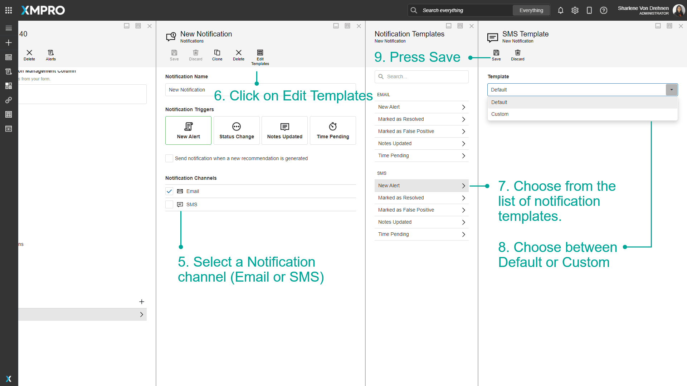

Notification
A Notification defines how users will be notified when a Recommendation Alert occurs. A Recommendation Alert occurs when a Rule condition is met and triggers the Alert to happen. Notifications are set for a recommendation Rule. Each Rule can have multiple Notifications, each based on different conditions that can trigger an Alert.
You can add a new Notification by pressing the plus button on the top right of the notifications.

Triggers
Notifications have several triggers. When they happen, will notify everyone who is subscribed to the notification. The triggers are as follows:
New Recommendation
When "Send Recommendation when a new recommendation is generated" is checked, subscribers will be notified when a new Recommendation Alert is created from the same Rule.
Status Change
When "Resolved" is checked, subscribers will be notified when a Recommendation Alert created by the same Rule is resolved.
When "False Positive" is checked, subscribers will be notified when a Recommendation Alert created by the same Rule is marked as False Positive.
Notes
When "Send notification when notes are added to a recommendation" is checked, subscribers will be notified when Notes are added or changed on a Recommendation Alert created by the same Rule.
Time Pending
When "Send a notification after" is checked, subscribers will be notified the specified amount of time after a Recommendation Alert is created from the same Rule if the Alert has not been resolved.
When "And repeat notification" is checked, subscribers will be notified the specified number of times, waiting the specified amount of time between each notification, if a Recommendation Alert has still not been resolved.
For example, in the image below, subscribed users will be notified once every hour for two hours that a Recommendation Alert has not been created and hasn't been resolved.

Channels
When a trigger occurs, everyone who has subscribed and has entered a correct email address in their profile will receive an email.
SMS
When a trigger occurs, everyone who has subscribed and has entered a correct mobile phone number (in international format) in their profile will receive an SMS.
Note
The email and mobile number that you use to receive notifications can be changed when updating the user settings.
Notification Template
When a Recommendation Alert is triggered by a critical event, the user can receive a notification via text message or email. The notification contains a message that notifies the user of the Recommendation Alert. You can choose to create a custom message template for when a notification is triggered, or use a default template provided.
Note
To learn more about Notification Templates, visit the How to Manage Notification Templates article.
Subscribe
Notification Settings are available only if the user has run access.
Notification Settings are managed individually by each User. To manage your subscriptions, hover over your user profile in the top-right of the page in App Designer, and click "Notification Settings".
By default, you will not be subscribed to any Notifications. You can subscribe to an individual Notification, Rule, Recommendation, or Category by checking it in the list and saving.
If an item is checked, you are subscribed to all Notifications — as well as Notifications that may be created in the future — within the item, and you will be notified when Notifications are triggered.

Further Reading
- How to Create and Manage Notifications
- How to Manage Notification Templates
- How to Subscribe to Notifications
Last modified: July 30, 2025